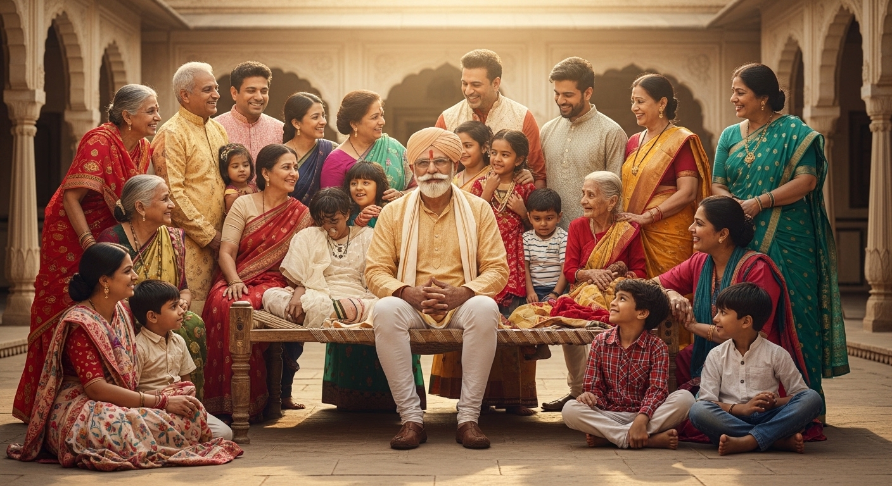
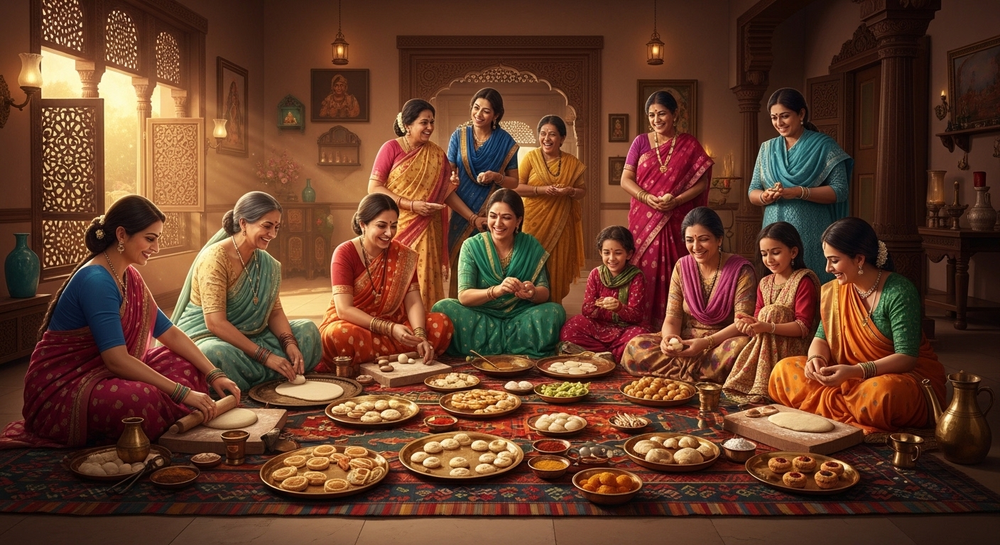
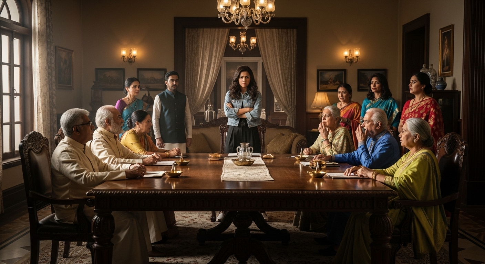

लेखक: उपेन्द्रनाथ 'अश्क'
मूल विषय: संयुक्त परिवार का महत्व, बड़ों का सम्मान और पारिवारिक एकता।
पात्र परिचय:
दादा मूलराज का परिवार एक बहुत बड़ा संयुक्त परिवार है, जिसमें दादा जी का आदर भगवान की तरह किया जाता है। परिवार की सारी स्त्रियाँ घर के काम-काज में लगी रहती हैं। इसी परिवार में बेला, जो सबसे छोटे पोते 'परेश' की पत्नी है, का आगमन होता है। बेला एक उच्च वर्ग, अमीर और शिक्षित परिवार से है। उसे घर का वातावरण बिल्कुल पसंद नहीं आता। वह परिवार के अन्य सदस्यों (बड़ी बहू, मँझली बहू आदि) के काम-काज, पहनावे और तौर-तरीकों की आलोचना करती है। उसे लगता है कि ये लोग अनपढ़ और गँवार हैं। बेला का यह व्यवहार परिवार में तनाव पैदा कर देता है और आए दिन घर में झगड़े होने लगते हैं।

जब दादा मूलराज को परिवार में चल रहे इन झगड़ों के बारे में पता चलता है, तो वे बहुत दुखी होते हैं। वे अपने परिवार को एक 'हरा-भरा पेड़' मानते हैं और नहीं चाहते कि कोई भी डाली (सदस्य) टूट कर 'सूखी डाली' बन जाए। बेला और परेश को परिवार से अलग होने से बचाने के लिए दादा मूलराज परिवार के सभी सदस्यों (विशेषकर बहुओं और इंदु) को बुलाते हैं और कड़ा निर्देश देते हैं। वे कहते हैं कि आज के बाद कोई भी बेला की आलोचना नहीं करेगा, न ही उसे कोई काम करने को कहेगा। उसे घर में पूर्ण स्वतंत्रता दी जाएगी और सभी लोग उसके साथ अत्यंत आदर और शिष्टाचार (Respect) से बात करेंगे।
दादा के इस निर्देश के बाद, घर के सभी सदस्य बेला के साथ बहुत ज़्यादा आदर और सम्मान से पेश आने लगते हैं। वे उससे बात-बात पर 'जी', 'आप' और 'बहुजी' कहने लगते हैं। कोई भी उससे मज़ाक नहीं करता और न ही उसे कोई काम करने देता है। शुरुआत में तो बेला को यह अच्छा लगता है, लेकिन धीरे-धीरे वह महसूस करती है कि इस 'ज़्यादा सम्मान' के कारण वह परिवार से पूरी तरह कट गई है। वह समझ जाती है कि परिवार ने उसे अपनाना छोड़ दिया है और वह घर में एक मेहमान या एक 'सूखी डाली' की तरह अलग-थलग पड़ गई है। यह अलगाव बेला के लिए असहनीय हो जाता है और उसे अपनी गलती का अहसास होता है।

अपनी गलती का अहसास होने पर बेला रोने लगती है और परेश से कहती है कि वह इस घर में अलग नहीं रहना चाहती, वह इसी परिवार का एक हिस्सा बनकर रहना चाहती है। वह दादा मूलराज के पास जाती है और उनसे माफ़ी माँगते हुए कहती है कि "दादाजी, मैं इस परिवार की एक सूखी डाली नहीं बनना चाहती।" दादाजी हँसते हुए उसे आशीर्वाद देते हैं और पूरा परिवार फिर से एक हो जाता है। इस प्रकार दादा की सूझ-बूझ से संयुक्त परिवार टूटने से बच जाता है।
इस एकांकी का मुख्य उद्देश्य संयुक्त परिवार (Joint Family) की उपयोगिता और महत्व को दर्शाना है। लेखक ने बताया है कि जिस तरह एक विशाल पेड़ की शोभा उसकी सभी डालियों के एक साथ जुड़े रहने में है, उसी तरह परिवार की शोभा सभी सदस्यों के मिल-जुलकर रहने में है। परिवार से अलग हुआ व्यक्ति एक 'सूखी डाली' के समान हो जाता है जिसका कोई अस्तित्व नहीं रहता। इसके साथ ही, एकांकी यह भी संदेश देती है कि परिवार के मुखिया को समझदार और दूरदर्शी होना चाहिए, जो छोटे-मोटे मतभेदों को सुलझा कर परिवार को टूटने से बचा सके।